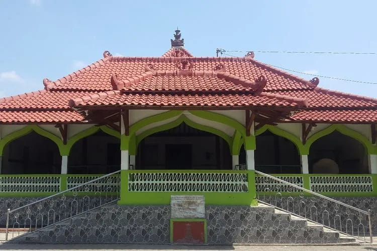
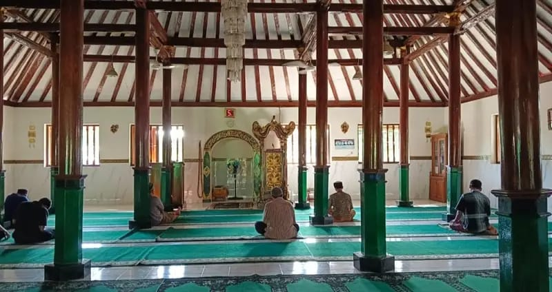
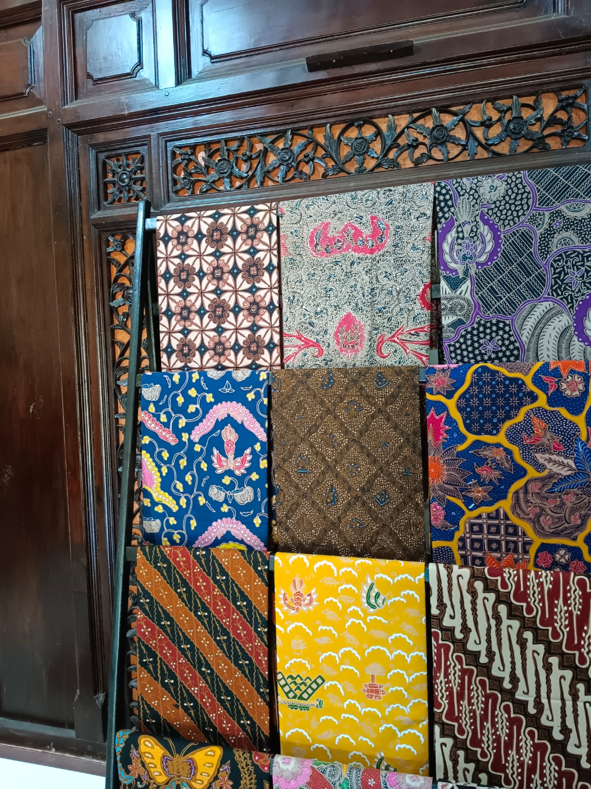
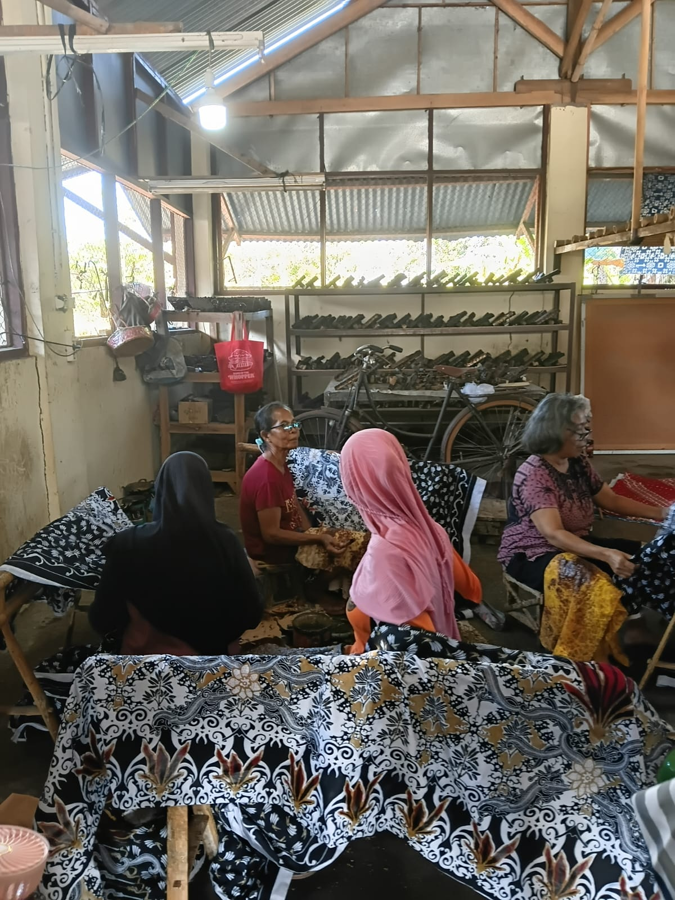
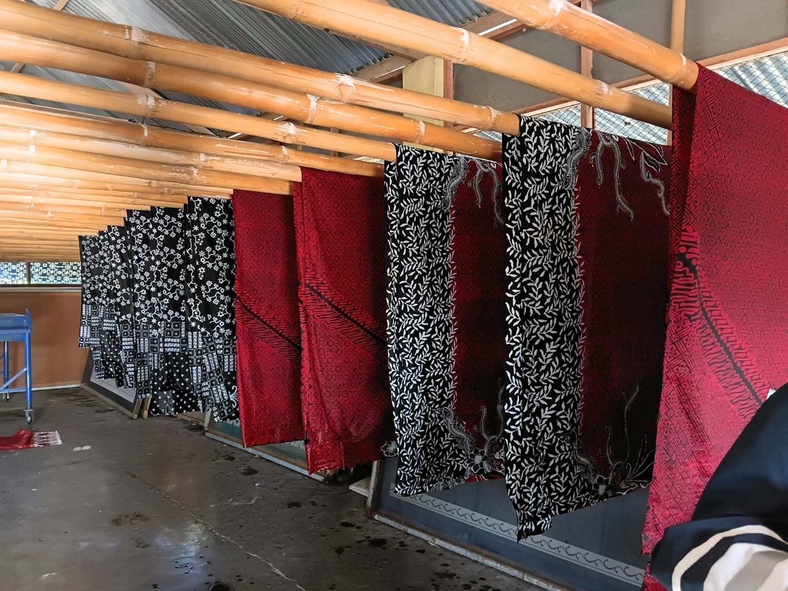
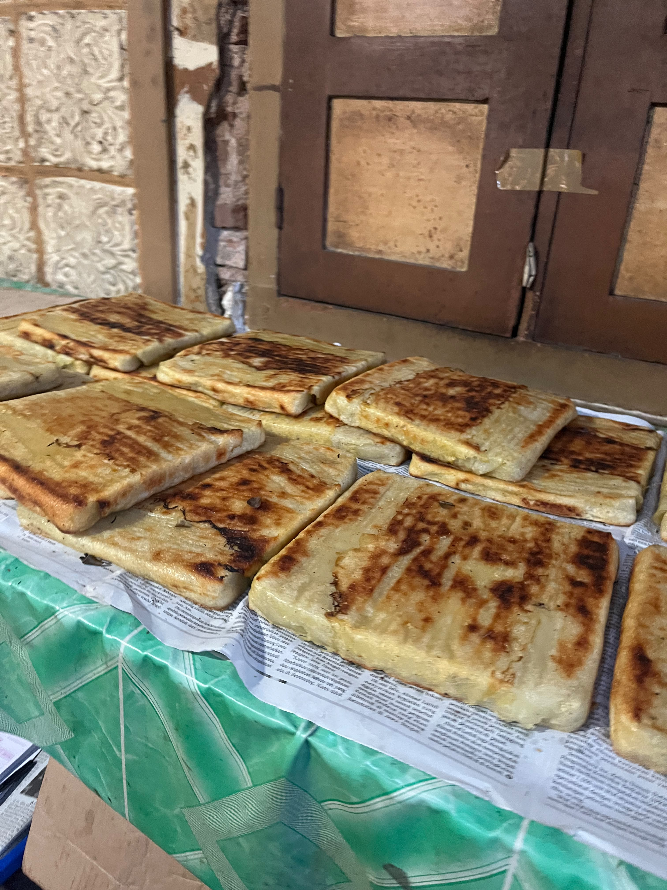
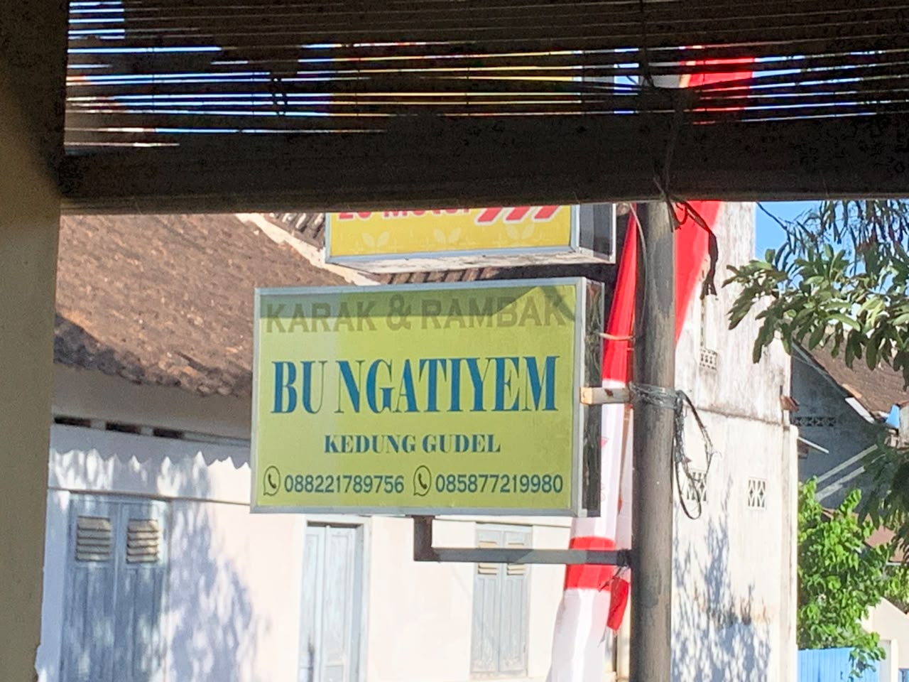
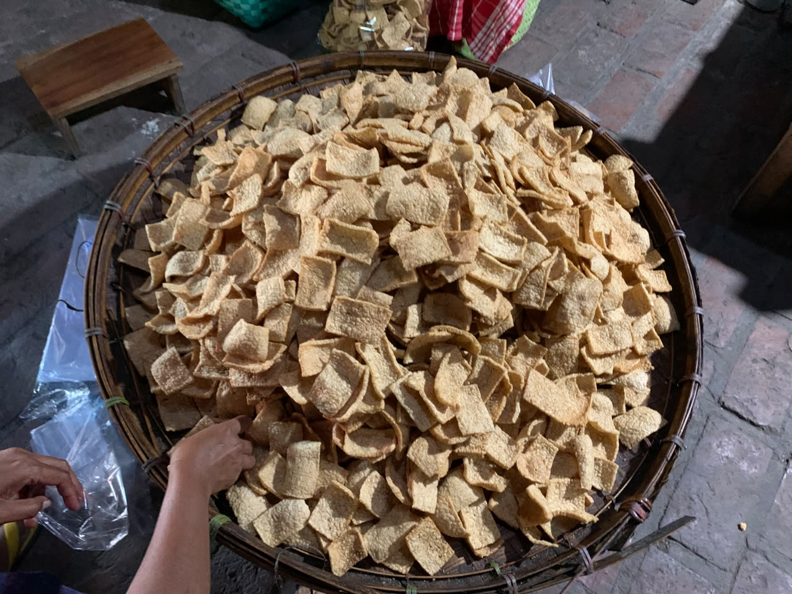

JELAJAH
KENEP
Menelusuri karya,
budaya, dan cita rasa.
Panduan wisata tematik untuk menelusuri kekayaan sentra batik warisan, kuliner olahan tradisional, serta jejak sejarah religi Desa Wisata Kreatif Kenep.
Di Mana Tradisi
Terus Bernapas
Desa Wisata Kreatif Kenep menghadirkan pengalaman wisata yang tumbuh dari kehidupan masyarakatnya. Dari proses membatik, pembuatan jenang dan karak yang diwariskan lintas generasi, hingga jejak religi Masjid Darussalam — setiap tempat menyimpan cerita tentang bagaimana tradisi terus hidup di tengah masyarakat.
Pilih Perjalananmu
Dua cara untuk mengenal Kenep lebih dekat. Pilih alur pengalaman yang paling memikat hati Anda.


Interior 🔍Masjid Darussalam
Masjid bersejarah di Kedunggudel yang diperkirakan berdiri sejak abad ke-14, berkaitan dengan penyebaran Islam oleh Kyai Lombok. Dipercaya pernah menjadi tempat pertemuan Pakubuwono VI dan Pangeran Diponegoro pada masa kolonial Belanda. Keunikannya terletak pada mimbar kayu bergaya Majapahit dan Sumur Kyai Pleret.

Makam Kyai Lombok
Terletak di bagian belakang Masjid Darussalam, Kedunggudel, Sukoharjo. Merupakan tempat peristirahatan Kyai Lombok yang dikenal sebagai penyebar agama Islam di wilayah tersebut. Hingga kini menjadi salah satu tujuan ziarah masyarakat dari berbagai daerah.

Karya
& Rasa
Dari helai kain hingga cita rasa jenang.
Rute utama menelusuri sentra batik lokal dan pembuatan jenang serta karak legendaris khas Kenep. Saksikan langsung proses warisan yang dipertahankan lintas generasi oleh para pengrajin dan pelaku kuliner Desa Kenep.


Motif Batik 🔍Batik Ayu Kusuma
Usaha batik yang berkembang sejak tahun 1980-an, merupakan generasi keempat dari Batik Kedunggudel. Sejak tahun 2000 berganti nama menjadi Batik Ayu Kusuma dengan koleksi sekitar 100 motif batik cap dan tulis. Pengunjung dapat belajar membatik sekaligus membeli berbagai produk batik yang tersedia.


Produk 🔍Jenang dan Roti Lestari
Usaha kuliner tradisional yang didirikan oleh Ibu Sri Lestari pada tahun 1986. Memproduksi berbagai jenis jenang dan roti tradisional dengan cita rasa khas. Pengunjung dapat melihat langsung proses pembuatan jenang dan roti serta membeli produk yang dihasilkan.


Produk 🔍Karak dan Rambak Bu Ngatiyem
Usaha kuliner yang berdiri sejak tahun 1940 dan kini dikelola oleh Wahyu Wulandari. Menyediakan oleh-oleh khas berupa karak dan rambak dengan cita rasa gurih yang telah digemari masyarakat selama lebih dari delapan dekade.
Panduan Kunjungan
| Destinasi | Jam Buka | Kontak / WhatsApp |
|---|---|---|
| Masjid Darussalam | 04.00 – 21.00 WIB | — |
| Makam Kyai Lombok | Setiap Hari (24 Jam) | — |
| Batik Ayu Kusuma | 08.00 – 17.00 WIB | 0858-9410-1549 |
| Jenang & Roti Lestari | Fleksibel | 0813-2912-9606 |
| Karak Bu Ngatiyem | 08.00 – Selesai | 0882-2178-756 |
Peta Perjalanan
Ketuk atau klik tautan "Buka Maps" di bawah setiap titik untuk navigasi real-time via Google Maps.
Semua tautan Google Maps aktif dan dapat diklik langsung dari panduan digital ini.
JELAJAH
KENEP
Menelusuri karya, budaya, dan cita rasa.
Desa Wisata Kreatif Kenep
Sukoharjo, Jawa Tengah
Digital Thematic Travel Guide
Edisi 2026
Disusun oleh KKN Tim 2 IDBU 64
Universitas Diponegoro 2026
Panduan ini dibuat untuk keperluan
pengembangan wisata Desa Kenep.